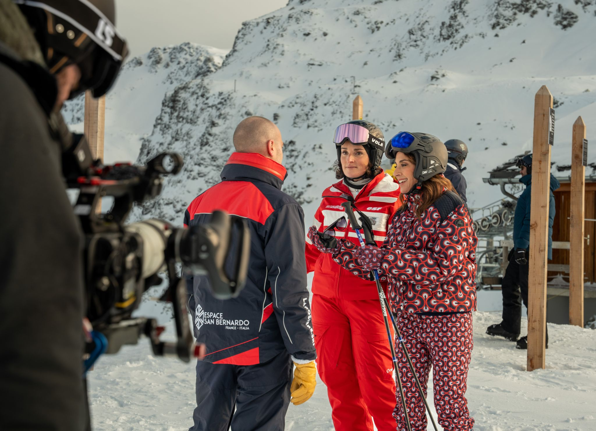
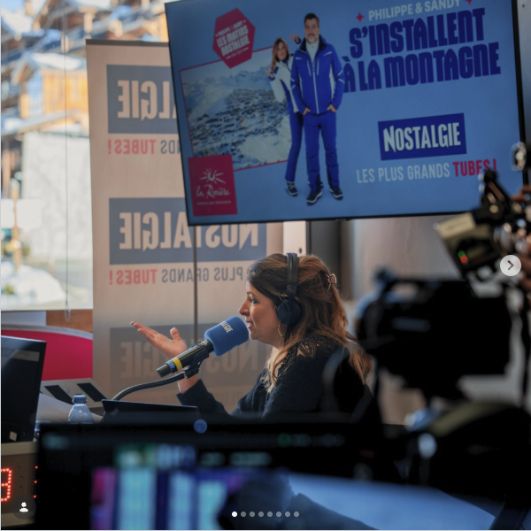
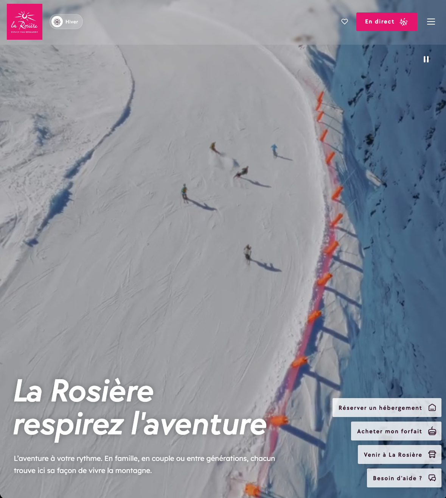
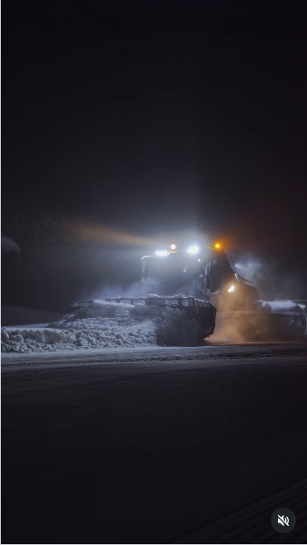
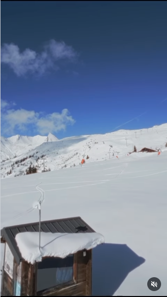
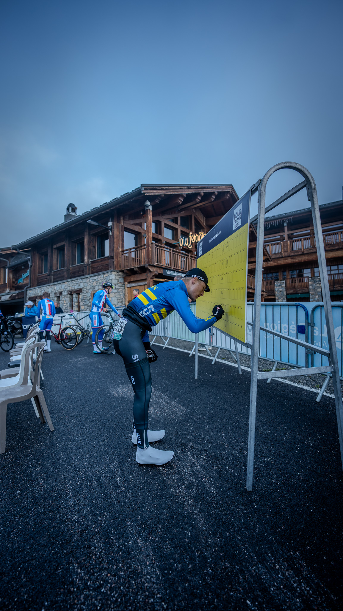
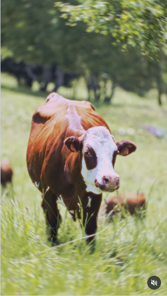

Récap Vidéo
Trail Blanc La Rosière
Trail running hivernal 2026.
📺
Websérie
Coucou La Rosière
Questions fréquentes des touristes à La Rosière.

Guide & Photo BTS
Explore Savoie La Rosière
Série Explore Savoie - Déc 2025.

Prise d'images
Les Matins Nostalgie
Philippe & Sandy - Jan 2025.

Contenu Web & Social
Site Officiel La Rosière
Contenu photo/vidéo - Mi-Nov 2025.

Instagram Reel
Dameuse La Rosière
Travail nocturne - Nov 2025.

Instagram Reel
Vue Drone La Rosière
Vue aérienne - Oct 2025.

Reportage
Tour de l'Avenir 2025
Août 2025 - Cyclisme.

Récap Vidéo
Last Man Riding
La Rosière 2025 - Cyclisme.

Instagram Reel
Tennis La Rosière
Promo estivale - Juin 2025.

Caméra Moto
Tour de l'Abitibi 2024
Caméraman moto pour TVGO.

Portraits Vidéo
Réussir Autrement
Portraits vidéo pour Priorité Jeunesse.

Experience Design
DaVinci l'Expérience
Expérience immersive avec IA - Présenté à Radio-Canada et au RIMA.

Vidéo 360°
Table Forêt
Expérience immersive 360° présentant les métiers de la forêt.

Court-métrage
GRWM
Court-métrage 2022 (Festivals 2023).
2026
2025
2024
2022